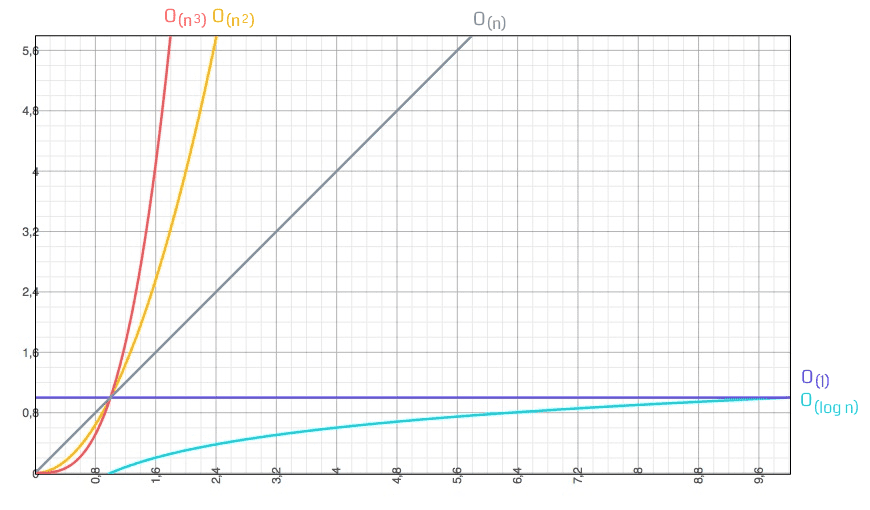
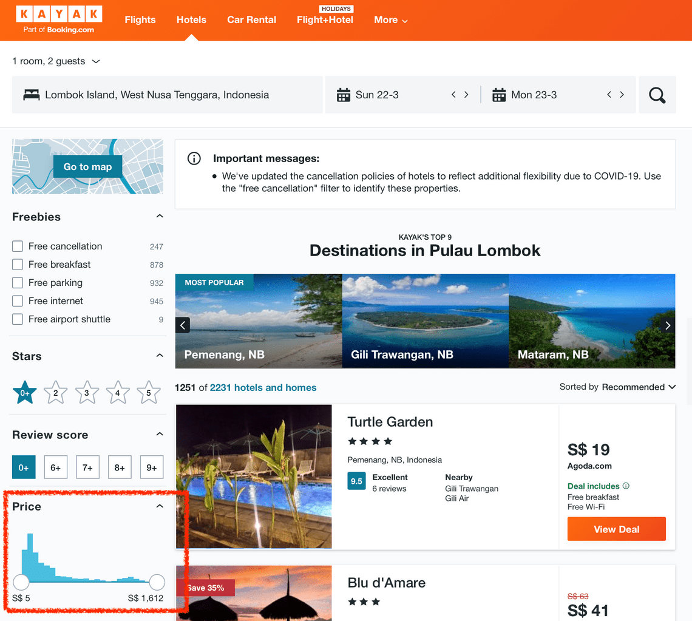

DEFINISI NOTASI BIG O
Notasi O besar atau yang lazim disebut dengan Big-O Notation adalah sebuah cara atau metode untuk melakukan analisa
terhadap sebuah algoritma pemrograman terhadap waktu eksekusi. Tentang seberapa efisien dan kompleksitas barisan kode
dalam dimensi waktu.
Di dalam sebuah program komputer pada umumnya, kita sudah lazim dengan istilah masukan-proses-keluaran.
Notasi O besar merupakan skenario terburuk dari sebuah algoritma, dan biasanya terdapat notasi n yang merepresentasikan jumlah masukan. Berikut adalah diagram notasi O besar dengan masukan yang dimulai dari 0 hingga tak terhingga.
Dari diagram diatas dapat kita lihat beberapa notasi yang kerap muncul, yaitu: O(1), O(log n), O(n), O(n2) atau O(nn). Untuk membahasnya, mari kita berandai-andai membangun sebuah aplikasi travel. Dan kita diminta untuk membuat fitur baru yang menampilkan daftar kisaran harga dari hotel-hotel yang berada di area tertentu.
Untuk membuat fitur tersebut, sederhananya kita mencari harga terendah (min) dan harga tertinggi (max) dari daftar hotel. Tentunya semakin banyak datanya, akan semakin lama pula proses untuk mencari harga terendah dan tertinggi.
KEGUNAAN
Big O Notation digunakan untuk mengukur tingkat kompleksitas suatu algoritma. Terdapat dua macam penggunaan notasi ini:
Infinite Asymphotic (Asimpotik Tak Hingga)
Notasi O Besar sangat berguna untuk mengnalisa efisiensi suatu algoritma. Misalnya, waktu yang diperlukan untuk menyelesaikan sebuah masalah dengan parameter n bisa jadi T(n) = 4n2 – 2n + 2. Semakin n bertambah besar, suku n2 akan mendominasi pertumbuhan, sehingga suku-suku yang lain dapat diabaikan – sebagai perumpamaan, jika n = 500, suku 4n2 akan 1000 kali lebih besar daripada suku 2n, sehingga mengabaikan suku-suku yang lebih kecil tidak akan memberikan efek yang cukup signifikan. Lebih jauh lagi, koefisien dari suku tersebut menjadi tidak relevan / dapat diabaikan. Misalnya ekspresi yang mengandung suku n2 atau 2n. Meskipun T(n) = 1.000.000n2, jika U(n) = nx, koefisien selalu dapat diabaikan, karena n berkembang lebih besar dari 1.000.000.Infinitesimal Asymphotic (Asimpotik Sangat Kecil)
Notasi O Besar dapat pula digunakan untuk menggambarkan kesalahan dalam sebuah aproksimasi dalam fungsi matematika. Seperti misalnya : Mengekspresikan bahwa kesalahannya, memiliki selisih dan lebih kecil dalam nilai absolut dibandingkan waktu konstan |n|3 untuk x mendekati 0. Dalam analisa asimptotik, kita lebih mementingkan kecenderungan ukuran (order of magnitude) daripada nilai aktual/sebenarnya dari sebuah fungsi. Dan lagi, kita tidak perlu mengetahui berapa lama waktu yang dibutuhkan untuk melakukan suatu operasi pada jenis komputer tertentu. Yang jelas, kita dengan mudah dapat melihat bahwa “n2“ adalah fungsi yang berkembang jauh lebih cepat dibandingkan fungsi linear seperi “n”. Untuk menggambarkan kecenderungan ukuran dari suatu operasi, kita menggunakan “Notasi O Besar”. Jika kita memiliki algoritma yang melakukan 7n4 + 35n3 – 19n2 + 3 operasi, Notasi O Besarnya adalah O(n4). Jika kita memiliki algoritma yang melakukan 2n + 5 operasi, Notasi O Besarnya adalah O(n). Perhitungan tersebut cukup sederhana.CONTOH-CONTOH
1. O(1) Konstan Menentukan apakah suatu bilangan ganjil atau genap
2. O(log * n) Iterasi logaritmik Algoritma pencarian Hopcraft dan Ullman untuk himpunan disjoint
3. O(log n) Logaritmik Pencarian dalam list terurut dengan Binary Search Algorithm
4. O((log n)c) Polilogaritmik Menentukan bilangan prima dengan AKS primality test
5. O(n) Linear Pencarian dalam list tidak terurut
6. O(n log n) Linearitmik Mengurutkan list dengan Heapsort
7. O(n2) Kuadratik Mengurutkan list dengan Insertion Sort
8. O(nc), c > 1 Poliomial Pencarian shortest path dengan algoritma Floyd-Warshall
9. O(cn) Eksponensial Pencarian solusi untuk traveling salesman problem
10. O(n!) Faktorial Menyelesaikan traveling salesman problem dengan menggunakan brute force
11. O(2cn) Dobel Eksponensial Pencarian himpunan lengkap dari AC-unifiers (associative-commutative unifiers) Tidak biasa,
namun pertumbuhan yang jauh lebih cepat masih mungkin terjadi